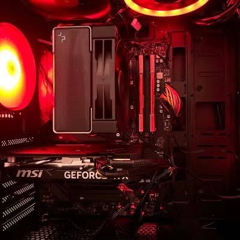

Featured / 001JAPANITURE MOD
Minecraft / Mod development
Japaniture.
日本の家具・家電・建築設備をMinecraftの世界へ。細部の形状や機能にもこだわり、街づくりと暮らしの表現を広げるModです。
JavaMinecraft3D modeling
Developer / Engineer / Creator
warudora / ワルドラ
Minecraft Modの開発、Webシステムの設計、コミュニティ運営。アイデアを実際に使える形へ変えるために、ジャンルを越えてものづくりを続けています。

01 / Featured work
これまでの活動を象徴する二つのプロジェクト。作品そのものだけでなく、開発と運営の過程も大切にしています。
日本の家具・家電・建築設備をMinecraftの世界へ。細部の形状や機能にもこだわり、街づくりと暮らしの表現を広げるModです。
鉄道・都市開発・技術をつなぐMinecraftコミュニティ。運営だけでなく、Mod構成、経済、映像配信、各種管理システムの開発にも取り組んでいます。
02 / Works
幅広い分野にまたがる10のプロジェクト。それぞれの概要と開発状況を、サイト内の個別ページで紹介しています。
※ 各項目はこのサイト内の紹介ページにつながります。非公開リポジトリや内部管理画面へ直接誘導しません。
03 / Journey
初めての公開から現在の複合的なプロジェクトへ。主な節目をまとめました。
日本の家具や家電をMinecraftへ追加するModを公開。モデル制作と機能開発を重ねてきました。
既存のMinecraft鉄道コミュニティの活動を統合し、都市開発と運営システムの開発を展開。
M-MAS、WaruSigns、K-SYS、Web・業務システムなど、ゲームの外にも制作の幅を広げています。
04 / Archives
大きなプロジェクトに限らず、日々の不便を解決するために作ったツールも残しています。
05 / Connect
開発情報や公開中の制作物、コミュニティの活動は公式アカウントでも発信しています。